In this tutorial you will learn how to create a simple Power Automate workflow that at the end of each day will recap the performance of your portfolio watchlist.
To complete this tutorial you will need the following.
We will be storing a list of stocks (our "watchlist") in an Excel spreadsheet in our OneDrive. Create a new Excel spreadsheet in OneDrive that looks like the following.
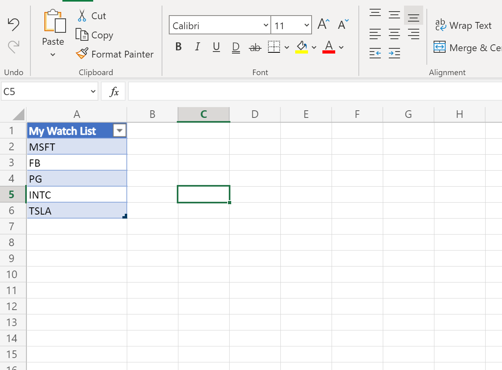Please note that your watchlist must be in a table! Power Automate can only read rows out of a table, so be sure to convert your watchlist to a table before moving on.
By storing your watchlist in an online spreadsheet like this, you can dynamically change the stocks (add or remove) and the workflow we set up will always use the most up-to-date version of your watchlist.
First, we need to create a new Power Automate workflow. This workflow will contain the logic that will perform on a daily basis.
Navigate to flow.microsoft.com in a new browser tab and click on "Create" on the left-hand menu.
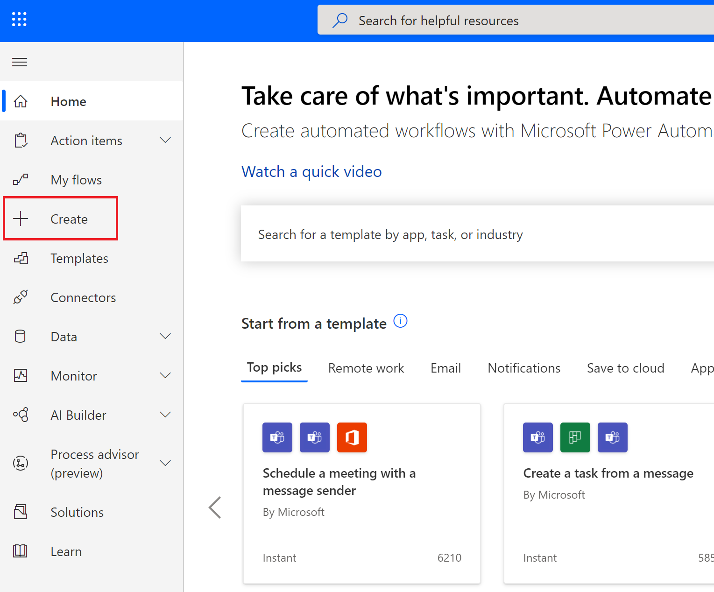We want our flow to run once per day at a predetermined time. For this, we will select a Scheduled Flow.
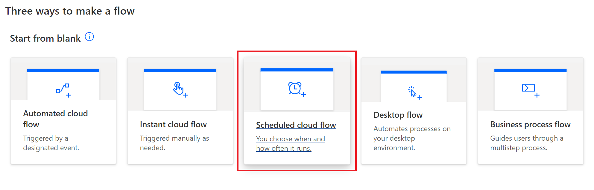Configure your flow to trigger with the following specifications:
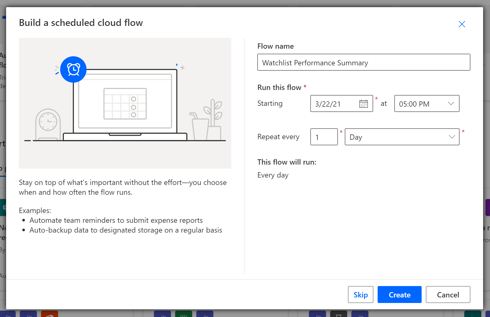Click on new step to add a new step to your flow. If the spreadsheet containing your watchlist is in OneDrive for personal use, select the "Excel Online (OneDrive)" connector. If it is in OneDrive for Business, select the "Excel Online (Business)" connector.
Select the List rows present in a table action.
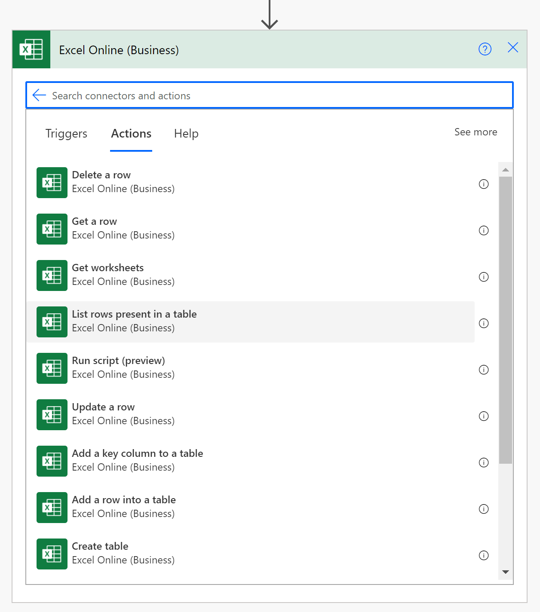Fill in the details of the action with the details that pertain to your watchlist spreadsheet.
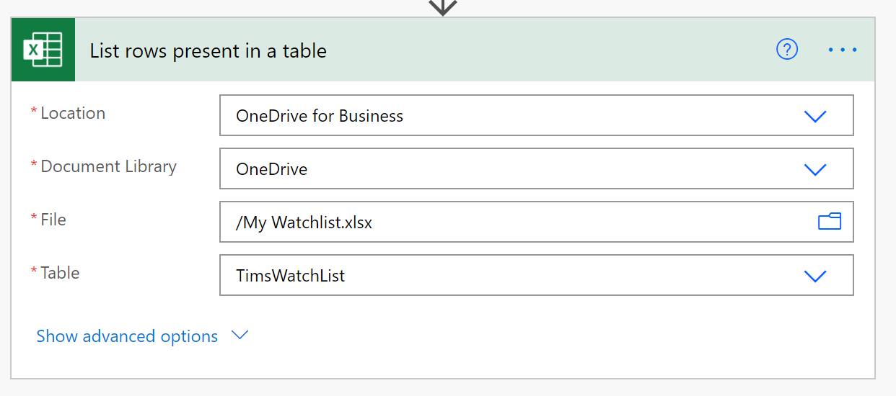Add a new step by selectin "+ New Step" and search for "Variable". Select the "Initialize Variable" action. This variable will serve as the body of our email.
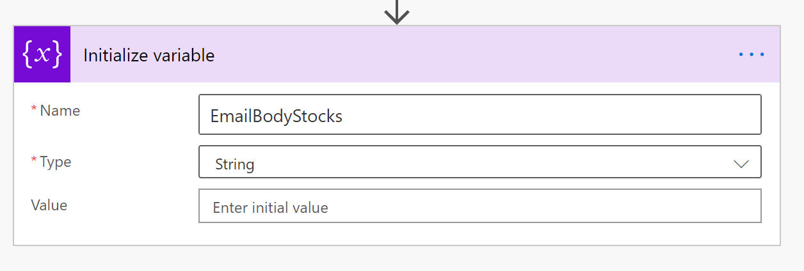We now have all of the resources required for our flow. We will now loop through each of the stocks from our watchlist, gather data, and place that in our variable which will later be sent out via email.
To loop through a list ("array") of objects, we will use the Apply to each action from the Control built-in connector.
For the Select an output from previous steps input, plug in the value from the Dynamic Content pane. You will find this property beneath the name of the action which listed the rows from the Excel table - called "List rows present in a table" in my example.
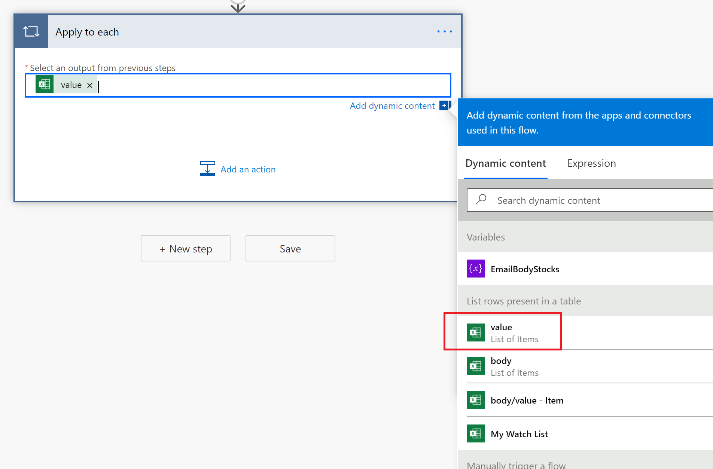Next, click on "Add an action" in the "Apply to each" control to add an action that will be carried out for each stock symbol.
Find the Aletheia connector under the Premium tab.
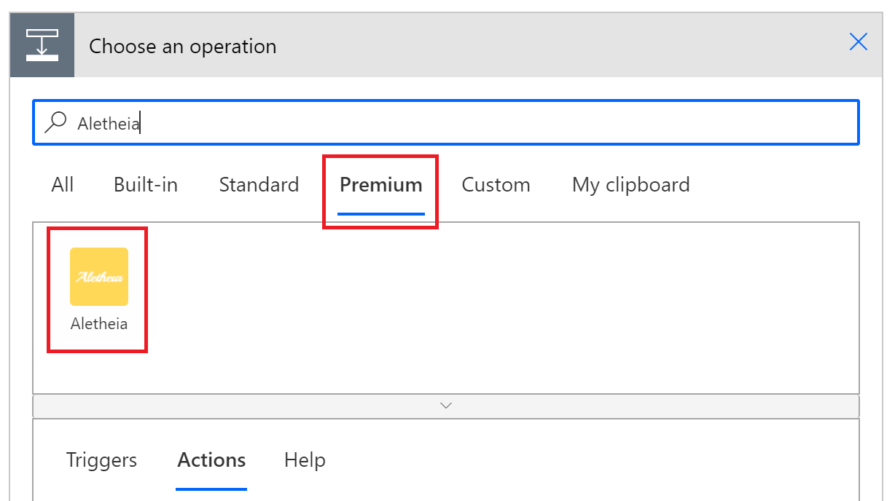Select the Get Stock Data action.
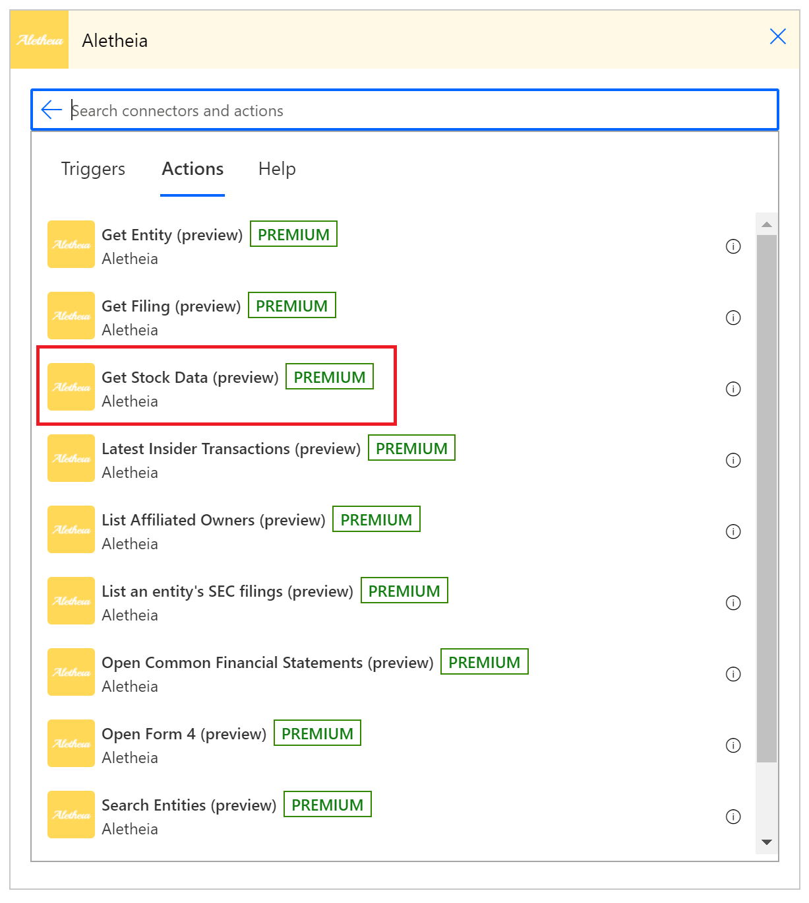If this is your first time using the Aletheia connector, Power Automate will likely prompt you to input your API key. Enter in the API key you were supplied with when registering for an Aletheia developer account. Register for a free account at https://aletheiaapi.com/login.
Give your connection to the API a name (doesn't have to be anything meaningful) and enter your API key into the "API Key" input.
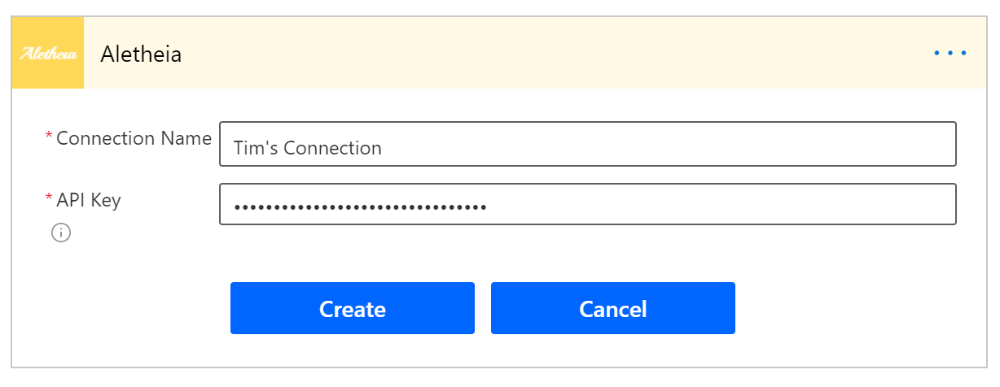After creating your new connection, plug in the value My Watch List into the Symbol input, and flip the Include summary data input to "Yes".
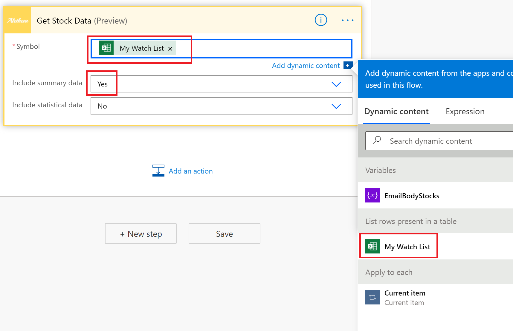